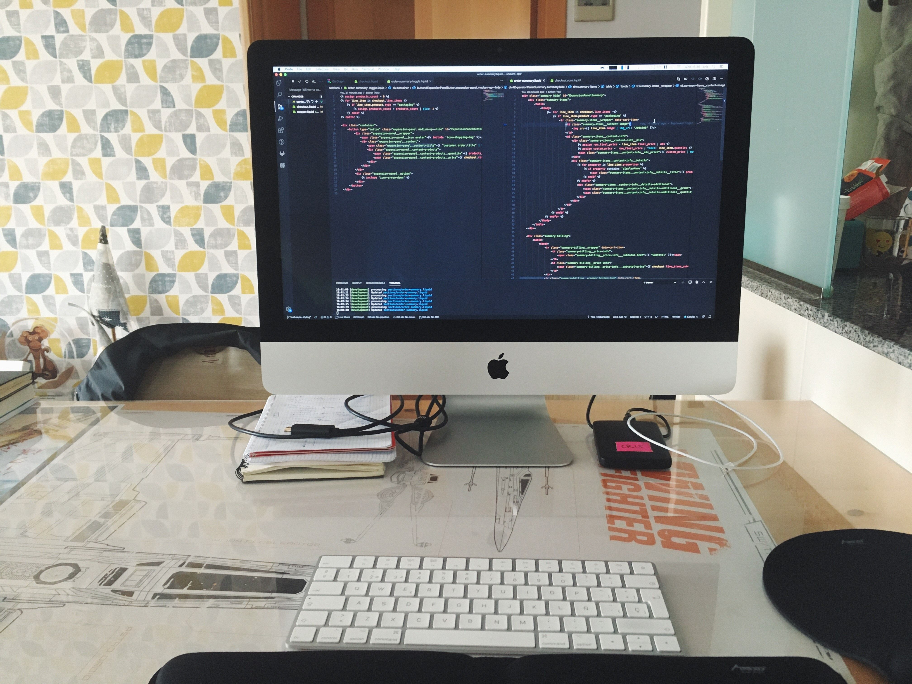
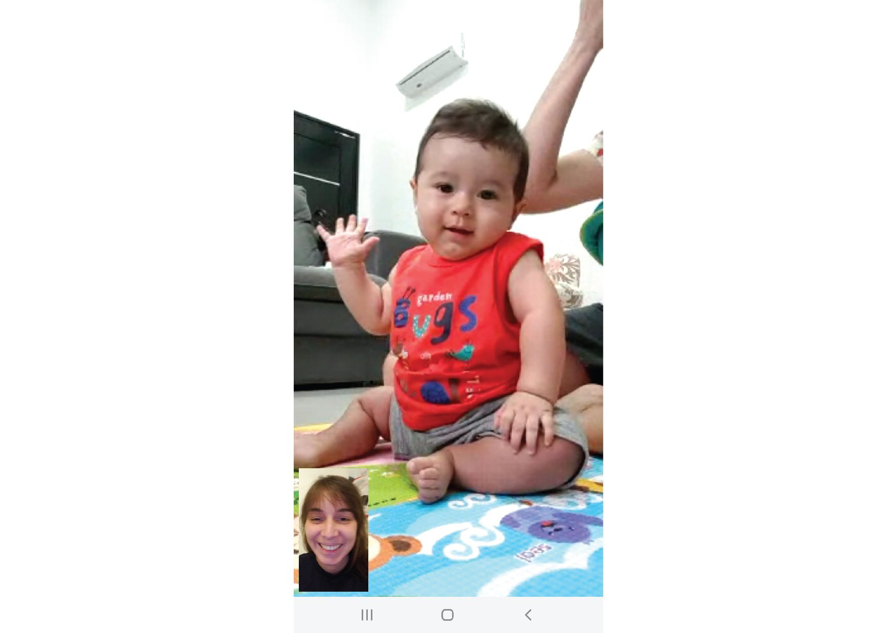
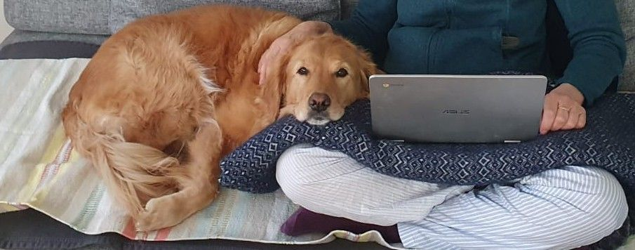
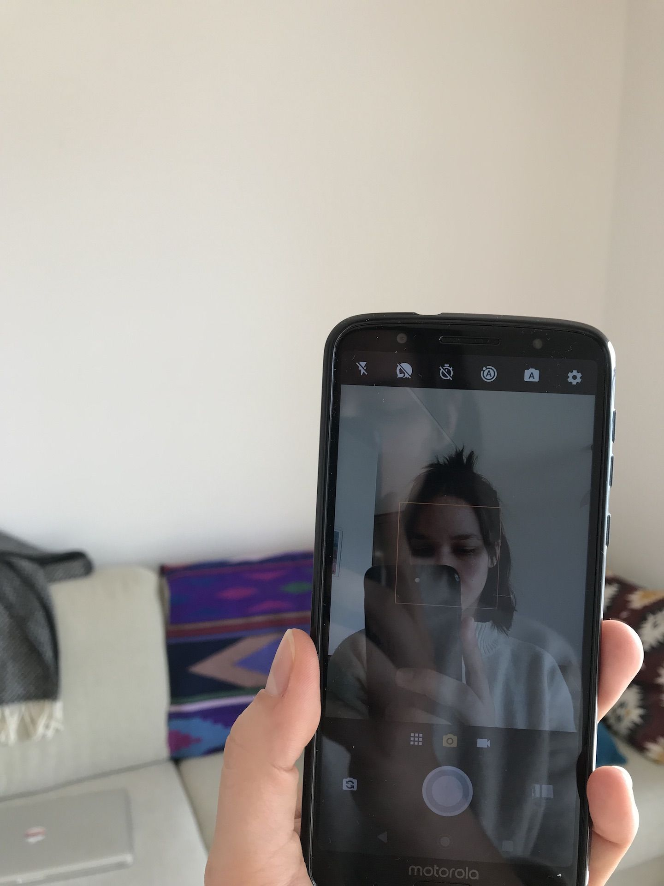

software in times of corona:
a collection
software in times of corona is a collection of reflections, stories and snapshots of our lives during the covid-19 crisis. We ask volunteers to contribute with a picture and a small caption responding to the question:
How is software shaping your experience during the covid-19 crisis?
If you’d like to participate, send your picture, caption, name and location to nadiacw@kth.sescroll down
👇

More than enough machines to be entertained.
Marcos, Spain.

Jordi, Spain.

Just like in college times, a table to eat, to work and enjoy. One (improvised) desk to rule them all.
Cris, Spain.

Human warmth through video call.
Fernanda, Sweden

Turns out I was the background.

Lots and lots of art by isolating artists are flowing through different platforms. Live streaming intimacy is really quite different from a concert intimacy.
Erik, Sweden

My friends would normally sit on this chair, but now it is being used by all the cables powering computers and monitors for work.
Marie Louise, Sweden

Dogs get more sofa time
Stephanie, Germany

I've been seeing my reflection a lot more than usual.
Nadia, Sweden

en tiempos de encierro forzado y Coronavirus, el software es conexión. (in times of forced confinement and Coronavirus, software is connection.)
Matías, France

Work, coffee, and code. Honestly, since I am entirely working home, I have no sense of day or night :)
Javier, Sweden

Cooking skill significantly improved

Getting fat with the cat (of course, the reason is above)

Being able to work at any time (the pic was taken just now) - March 24th 2020, 19.13
Long, Sweden

less work related, but still the product of software and covid19
Nicolas, Sweden
Kitchen setup: A dev too close to the fridge/food
César, Sweden

A screenshot of the full-fledged online version of the second class of our DevOps course
Zoom and robust sound and image processors are the key software ingredients of our e-learning experiments
Benoit, Sweden

What comes to my mind is really to store a lot of food and not going out, thought its not related to the software.
He Ye, Sweden

covid-19 e-learning setup — improvisation with available things
Martin, Sweden

An isolated incident - Google Translate to write a letter in Swedish to our neighbor in the risk-group telling her to reach out if she needed help
Deepika, Sweden
end 🌝
If you’d like to participate, get in touch: nadiacw@kth.se